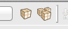
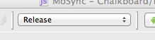
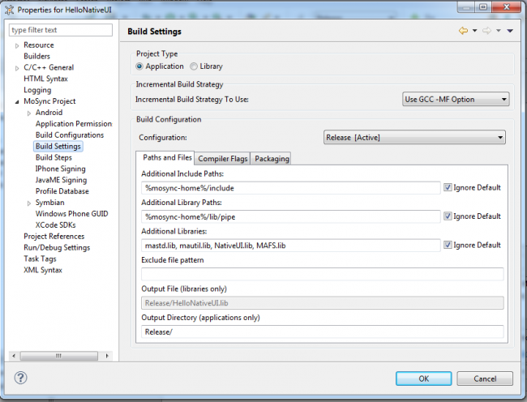

to run the application in the emulator, or
to run the application in the emulator, or
Through MoSync Eclipse IDE, builds can be set to start automatically or started manually. The project's build configuration (Release, Debug mode, etc.) specifies the compiler, packager, and linker build settings, and memory allocations. Here we describe the options available to you, and the effect of various build settings on the output packages.
When the automatic build feature is on, your application will be built whenever any file in the project is saved. By default, the automatic build feature is turned off. You can enable it by selecting Build Automatically from the Project menu.
When the automatic building feature is turned off, there are several ways to build your application manually:
to run the application in the emulator, orIn the case of both automatic and final builds done this way, the package is only built for the currently selected device profile. For more information about how to to build the application for several devices and platforms, see Finalize Your Application.
Use the following syntax to build MoSync projects from the command line:
mosyncc.exe -application com.mobilesorcery.sdk.builder.headless -data workspacelocation -project [-f finalizerscript] projectname
Replace workspacelocation with the location of your workspace, and projectname with the name of the project to build. This will actually launch a Finalizer build with the currently set device filters.
If you wish to produce binaries for a different set of devices you will need to create a Finalizer script and use the -f switch. A finalizer script is just a text file containing lines like the ones produced when you click the Propagate button in the Finalize view in the IDE.
The location where the newly built package is stored can be seen in the IDE's Console view.
If something goes wrong during the build process (or you find inconsistencies in your application when it runs), you should clean up your project files. Cleaning removes the intermediate files created during the build process.
To clean up your project files, do one of the following:
All new MoSync projects have two build configurations available by default: Release and Debug. These are the build configurations for creating standard release packages and for building a debug version of the application.
You can create more build configurations if you need them. For example, if your target platforms have different screen sizes and want to use different image files, you can create new build configurations to make sure the right images are included in each package. (Excluding files is done on a per-configuration basis, so in the above case it would be easy to have one resource list file for, say, 320x240 screens, and one for 220x176 screens, and just exclude/include the desired files.)
The currently active build configuration is shown in a drop down list in the toolbar. To set another build configuration, just select it in the drop down list.

To add a new build configuration to a project:

| Project type | A project can be a stand-alone application or a library. Note: when building a library, make sure to check the Ignore default checkbox to the right of the Additional Libraries text box, otherwise the default set of libraries will be included during the build and you will get errors. | |
| Incremental Build Strategy | The default incremental build strategy is to compile all C files with the GCC -MF switch which generates dependency files consumed by the IDE and used for determining which files to rebuild. The other strategy is to always perform a full build. | |
| Configuration | The configuration selected in this box is the one being edited. | |
| Paths and Files | Additional Include Paths / Library Paths / Libraries | These three options allows the user to set additional C/C++ include paths, library paths and libraries to be used during compilation and linking. The Ignore Default checkboxes is an advanced option to exclude the MoSync system libraries from the build. Note that, from MoSync 2.5 onward, there are several Path Variables you can use in paths. |
| Exclude file pattern | A space-separated list of files to not include in the build. An example could be test*.c which will exclude all C files that start with test. There is an option to explicitly include files as well, which can be useful for example if all except one file in a directory should be included. To include a file, prefix the file with a + character. So the line /images +player1.png will exclude all files in the images directory except the player1.png file. Files can also be excluded/included from a build by right clicking a file in the project explorer and selecting the Exclude From Build and Do Not Exclude From Build menu items respectively. | |
| Output File (libraries only) | The output file of the built library, relative to the project's Output directory. | |
| Output Directory (applications only) | The output directory of the built application, relative to the project's Output directory. | |
| Compiler Flags | Activate Dead Code Elimination | This option instructs the linker to remove all redundant code from the resulting binary. (Only applicable for applications; we cannot tell which parts of a library is dead code before it has been incorporated in an application) |
| Additional GCC Switches | Allows the user to set additional GCC switches. By default an optimization level switch is set for each configuration; -O0 for the debug configuration and -O2 for other configurations. Note: that no other optimization level than -O0 should be set for debug configurations as this will confuse the debugger and trigger errors during debugging. | |
| Additional Resource Compiler Switches / Additional Linker Switches | Allows the user to set additional compiler and linker switches. To get an overview of the available options, run Pipe-Tool from the Windows command line with the -h switch (pipe-tool -h). | |
| GCC Warnings | Compiler warning levels, corresponding to the GCC -Wall, -Wextra and -Werror switches. | |
| Memory Settings > Heap size / Stack size | Sets the amount of memory (in kilobytes) to allocate to the heap and the stack respectively. If your application runs our of memory (e.g. you get a "malloc failed" error) you can increase the amount of memory allocated for the heap. But see Memory Settings > Data size below for some limitations. | |
| Memory Settings > Data size | Sets the total amount of memory (in kilobytes) to allocate, including the heap and stack. The size will be rounded up to the nearest power of two. Memory settings must be chosen so they conform to the following rule: Data Size > Heap Size + Stack Size + Application's static data section Since there's no easy way of knowing the exact size of the statically allocated memory, a good rule of thumb is to use the following relationship: Data Size = n Heap Size = n/2 Different devices have different amounts of memory available. If you specify a Data Size greater than the amount of available memory on the device, your program will fail to execute. | |
| Packaging | Use Debug Runtimes | This option instructs the packager to create packages with debug runtimes. Debug runtimes carry more information to aid the developer during application development. In particular more descriptive error messages will be shown if the debug runtimes are included. [And in the future, this is where on-device debugging support will be put.] |
| Use static recompilation | Some platforms (for example, iOS, Windows Phone 7) support static recompilation. If you set this flag your program will be pre-compiled by the native compilers on those platforms to the platform's native language (C++ on iOS, C# on WP7). This will slow down the compilation somewhat but will make for a faster app. | |
| Version | Your application's version number (major.minor), used as a label in the application packages. For example "2.4". Note that the minor version number may not be supported on all platforms. Default: "1.0". | |
| Publisher | Your publisher or vendor name, used as a label in the application packages. For example: "Joe Smith Software". Default: "Built with MoSync SDK". Note that some platforms (for example Android) have no publisher identification within the package. For Windows Mobile, this value will be used for both the "provider" and "manufacturer" label within the package. | |
| Application Name | The name to be used for the application's installation package. For example, if Application Name is to "MyCoolApp_setup", the installation package created for Android devices will be MyCoolApp_setup.apk. If not set, the project's name will be used instead. Note: the name of the installed application will always be the project name, which can be changed by right-clicking on the project in Project Explorer and selecting Rename. | |
In Build Settings you can use the following variables in paths:
| %app-name% | Name of the application defined in "Build Settings" -> Packaging. |
| %app-vendor% | Application vendor defined in "Build Settings" -> Packaging. |
| %app-version% | Version of the application, as defined in "Build Settings" -> Packaging. The required format is major[.minor][.micro][.qualifier]. Example: 3.0.1.20120306T090112 |
| %compile-output-dir% | Path to the directory where the compiled source files will be stored. |
| %mosync-bin% | Path to the MoSync bin directory. |
| %mosync-home% | Path to the MoSync home defined by environment variable MOSYNCDIR. |
| %package-output-dir% | Path to the directory where the resulting package will be stored. |
| %platform% | The name of the platform in the profile being built for, e.g. android_7, wm6 etc. |
| %platform-family% | The (uppercased) name of the platform family (eg ANDROID, IOS). Any character that can not be part of a C identifier will be replaced by an underscore. |
| %platform-variant% | The (uppercased) name of the platform variant (eg IPAD). Any character that can not be part of a C identifier will be replaced by an underscore. |
| %profile% | The device name in the profile being built for, e.g. Desire. |
| %programcomb-output% | Output directory of program.comb (combined program and resource files). |
| %program-output% | Path to the directory where the program file will be stored. |
| %project:<project>% | Path to the root of another project in the workspace, e.g. %project:3dlines%. |
| %project-name% | Name of the project. |
| %runtime-dir% | Path to the runtime directory. |
| %vendor% | The name of the vendor in the profile being built for, e.g. HTC. (For projects that use the default platform based profile database, this will be the platform name.) |
| %version-major% | Major part of the version number (see %app-version% above). |
| %version-minor% | Minor part of the version number (see %app-version% above). |
| %version-micro% | Micro part of the version number (see %app-version% above). |